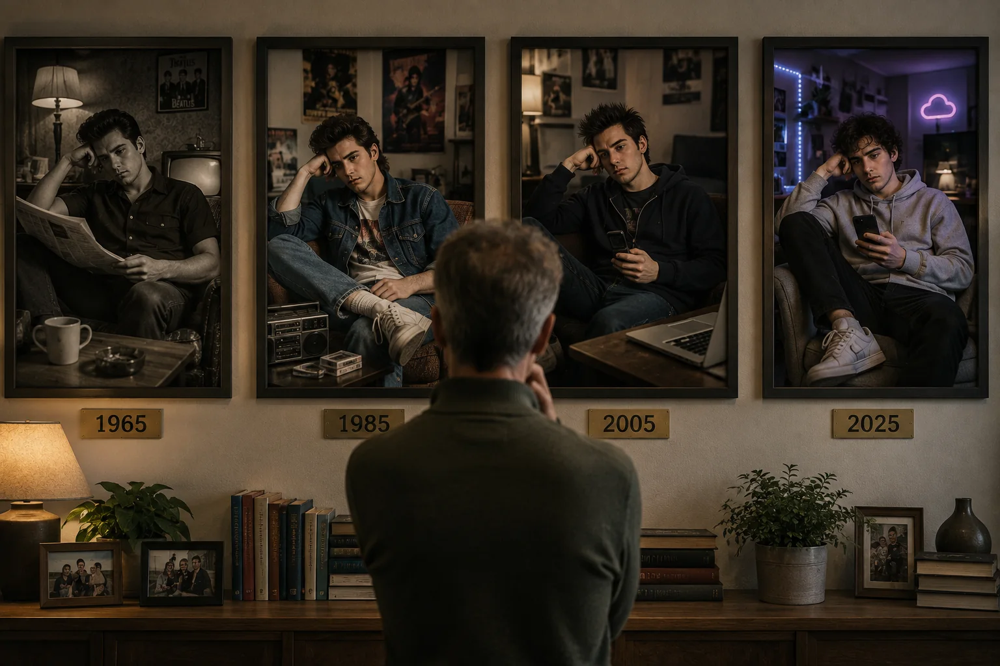
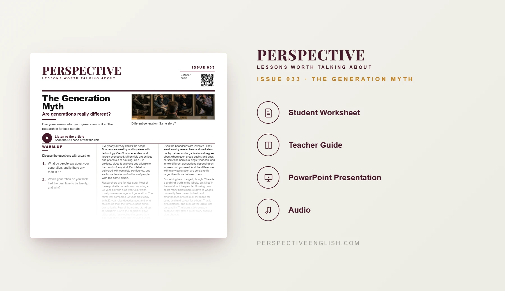

ISSUE 033
Generation Stereotypes ESL Lesson
The Generation Myth
A ready-to-teach C1–C2 Generation Stereotypes ESL lesson examining Gen Z, Millennials, Boomers, age labels, circumstance, personality and whether generation differences stand up to scrutiny.
CHOOSE YOUR LEVEL
Collection 06 includes Issues 031–035.

LESSON PREVIEW

ABOUT THIS LESSON
About This Generation Stereotypes ESL Lesson
Boomers, Gen X, Millennials and Gen Z are routinely described through confident stereotypes, yet research suggests many supposed generation gaps actually confuse age with generation.
This C1–C2 Generation Stereotypes ESL lesson examines how generation boundaries are constructed, why stereotypes persist, and whether differences in housing, education and technology reflect circumstance rather than personality.
Students work with advanced expressions, separate evidence from impression, defend another generation against a stereotype and write an extended argument that addresses the strongest opposing view.
FROM THE ARTICLE
WHAT'S INCLUDED
What's Included in the Generation Stereotypes Lesson?
- Magazine-style C1–C2 ESL student worksheet
- Advanced original generation stereotypes reading and audio recording
- Five advanced expressions and evidence-based true-or-false comprehension
- Five advanced discussion questions about generation labels, stereotypes, personality and circumstance
- Who Has It Hardest? critical-thinking activity: rank Boomers, Gen X, Millennials and Gen Z across six areas of life
- Evidence-versus-impression verdict: decide which ranking could be defended with evidence and which rests mainly on perception
- Language in Context practice with expressions from the article
- Generation-defense speaking challenge: argue why a stereotype about another generation is unfair, then defend the position under challenge
- 200–250 word argument: “Generations are not really different; they simply grow up in different worlds.”
- Teacher guide and complete answer key
- Ready-to-use classroom presentation
GET THE COMPLETE LESSON
Ready to Teach Generation Stereotypes?
Get the complete C1–C2 Generation Stereotypes ESL lesson individually or save with Perspective Collection 06.
Secure checkout and instant digital delivery through Payhip.